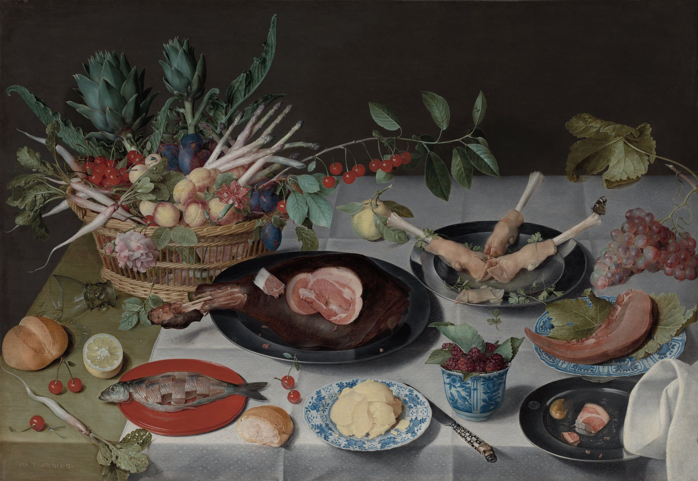
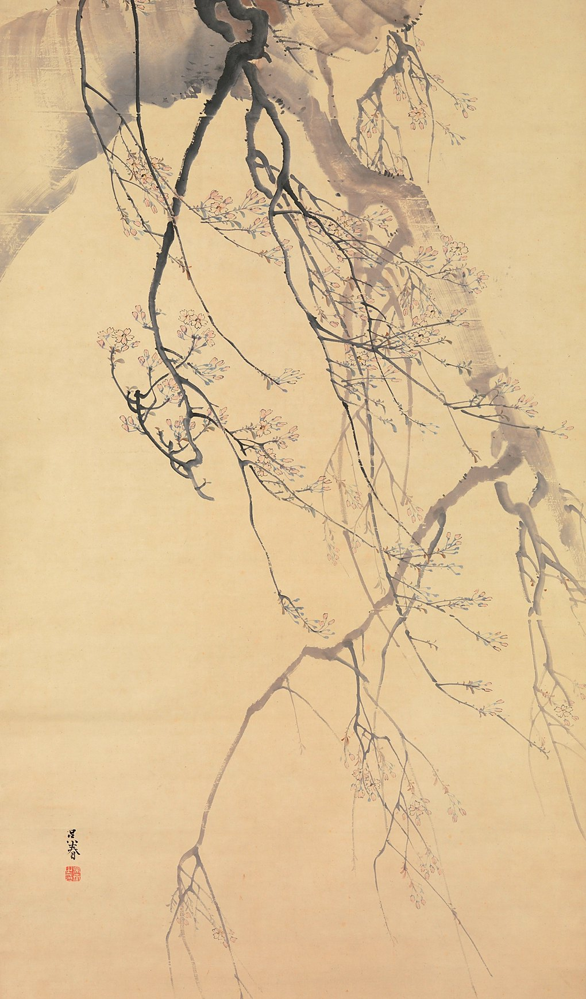
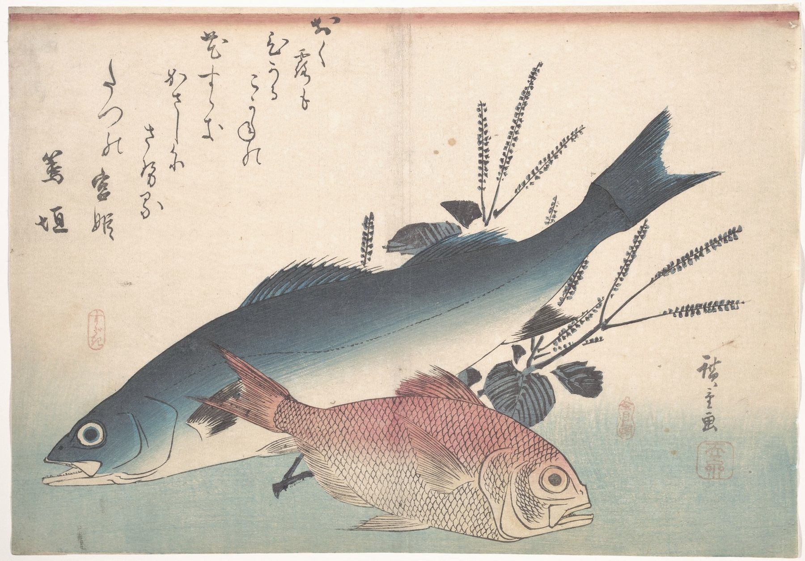
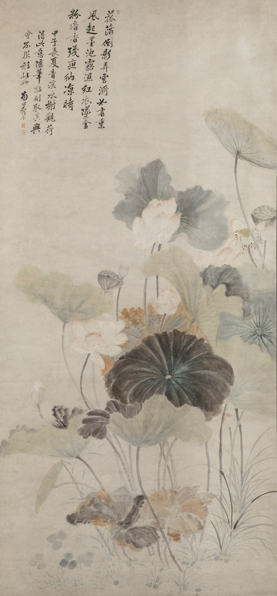
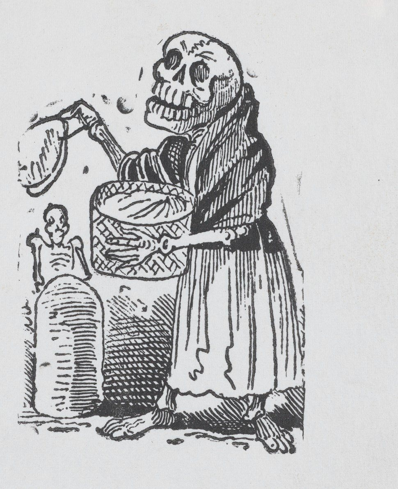
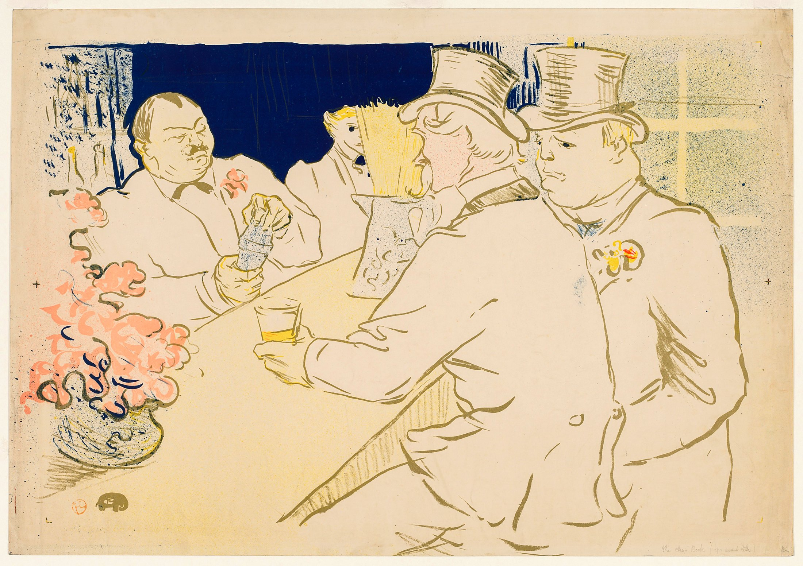
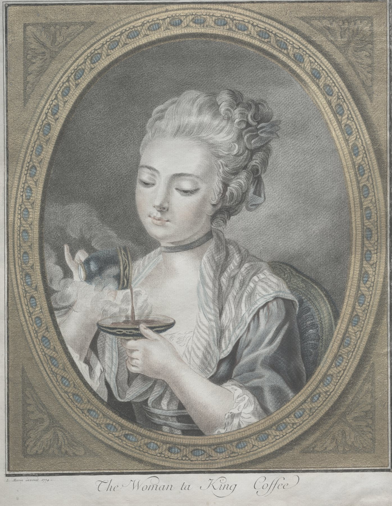
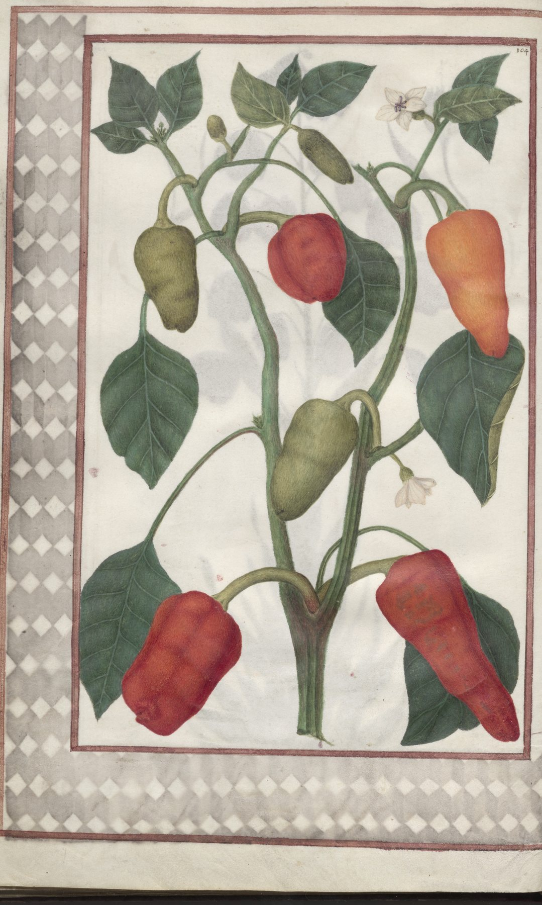
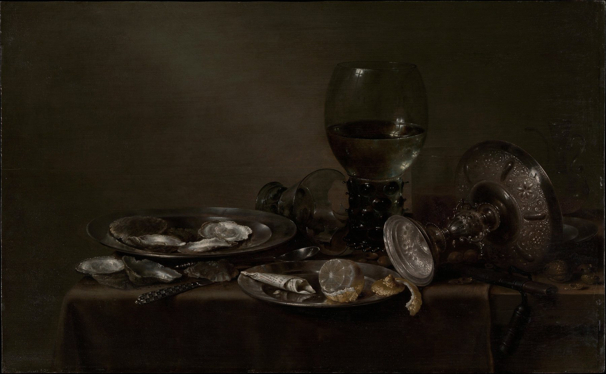

Marketing Build:
Scope & Audit
Prepared by Hakeem, Expressive Space
October 2026
Measurement is the bare minimum. It was never set up.
All 7 concepts, by April 30, 2027.


[ 2 ]
[ 3 ]
[ 4 ]
[ 5 ]
[ 6 ]
[ 7 ]Every concept gets its own strategy and voice. Not one size fits all. We innovate and experiment.

I help brands tell their story, with passion and emotion. Seven concepts, seven stories worth feeling.
On site at every concept: I eat the menu, watch service, and sit down with staff and managers.
| Social | Paid | Search | Reviews | Website | Data |
|---|
Virality isn’t the goal. It isn’t sustainable.
We build attention that compounds, week after week.
Both add cost and slow the team down. We do them once messaging and feel are A/B tested in the wild.
Ad spend, UGC and influencer fees, production, events, tools and salaries are paid by Big Spoon directly. No markup.
Hakeem · Expressive Space · expressivespace.co
Open Access collections of The Metropolitan Museum of Art and The Cleveland Museum of Art, released as Public Domain (CC0). Color and contrast lightly enhanced; some cropped to the image area. Restaurant names are set in type.